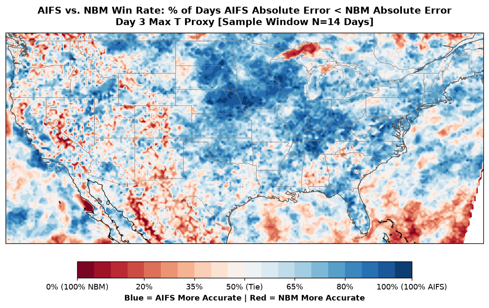
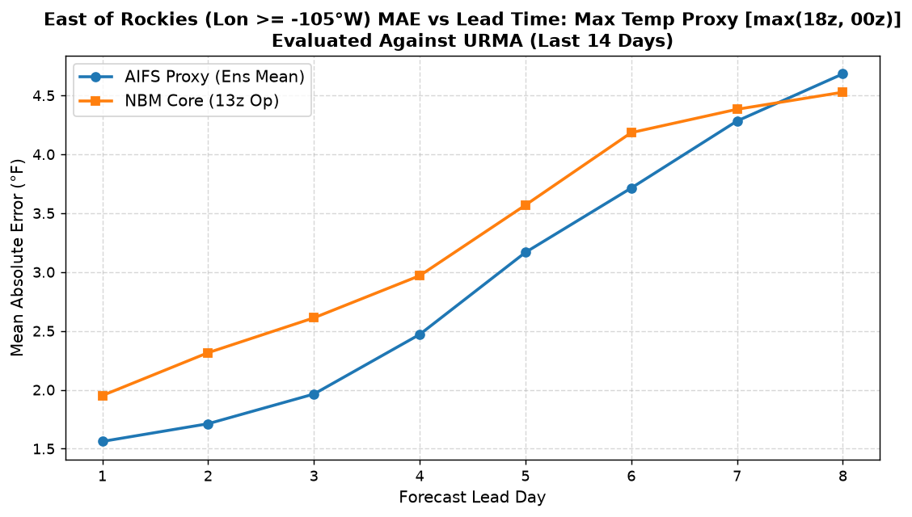
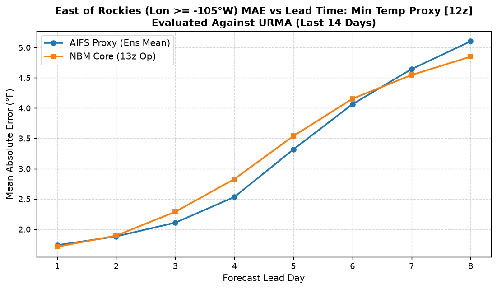

AIFS vs. NBM Medium-Range Verification
Apples-to-Apples Synoptic Hourly Evaluation vs. NOAA URMA Analysis
ℹ️ Verification Methodology:
- Synchronized Sampling: To prevent artificial diurnal penalties from 6-hourly output, Min T is evaluated at 12:00 UTC and Max T is evaluated as $\max(18\text{z}, 00\text{z})$ identically across AIFS, NBM, and URMA.
- Datasets: 00z AIFS Ensemble Mean vs. 06z NBM Core (13z operational package) interpolated to a shared 0.25° CONUS mesh.
- Win Rate Interpretation: Displays the percentage of days AIFS achieved a lower absolute error than NBM. Blue shading indicates AIFS superiority (>50%), while Red indicates NBM superiority (<50%).

Error Growth by Forecast Lead (Days 1–8)
Full CONUS Domain
Max T Proxy [max(18z, 00z)] MAE

Min T Proxy [12z] MAE

East of the Rockies (Longitude ≥ -105°W)
Terrain-Filtered Synoptic ZoneExcludes complex Intermountain West terrain where high-resolution statistical downscaling strongly aids NBM.
Max T Proxy [max(18z, 00z)] MAE

Min T Proxy [12z] MAE
